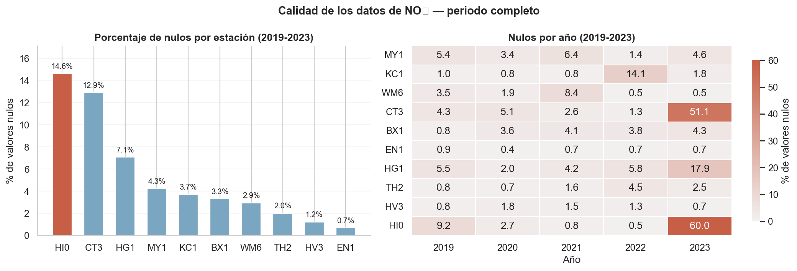

Análisis Exploratorio de los datos LAQN (NO2, 2019-2022)

% nulos por estación y año — periodo completo (2019-2023)
% nulos tras filtrado — estaciones conservadas (2019-2022)
Distribución de NO2 por estación con umbral OMS (40 μg/m³)
Patrones temporales de NO2 por estación
NO2 medio por hora del día (2019-2022)
NO2 medio por día de la semana (2019-2022)
NO2 medio por mes (2019-2022)
NO2 medio anual (2019-2022)
Descomposición estacional por tipo de estación
Modelo predictivo de contaminación (Estación MY1)
Modelo Random Forest (100 estimadores) — clasifica si el NO2 en MY1 (Marylebone Road) sube, baja o se mantiene estable la próxima semana. División temporal 70/15/15.